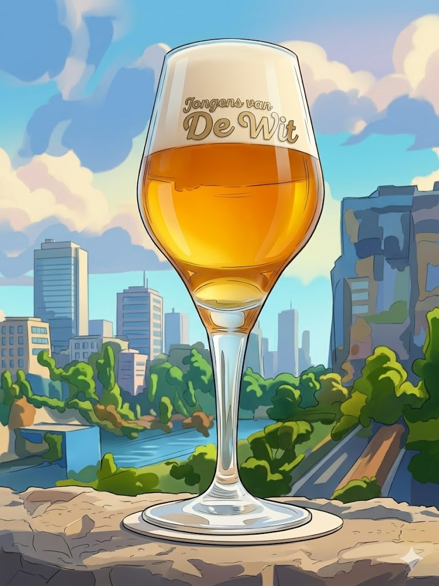
Blond
Maagdelijk Blond
5,1 vol% · Licht goudkleurig
Fris en stevig blond met een witte schuimkraag. Meerdere hopsoorten, zachte smaak — perfecte dorstlesser op een zonnige dag.
Ons eerste bier
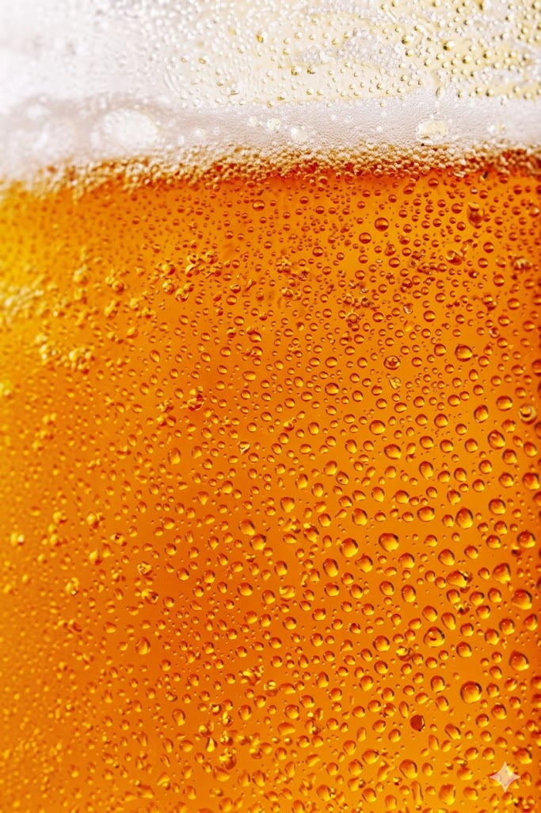
Ambacht staat voorop
Wij brouwen onze bieren onder het oog van onze gasten — met lokale ingrediënten, authenticiteit en een onverzettelijke liefde voor het ambacht. Gebrouwen in 's-Hertogenbosch.
Ontdek de bierenEen kijkje achter de tap
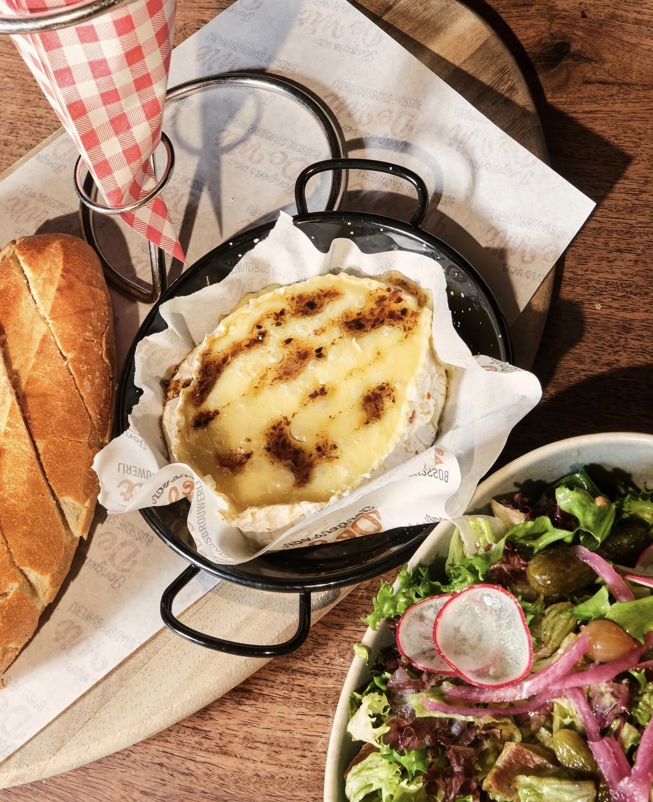
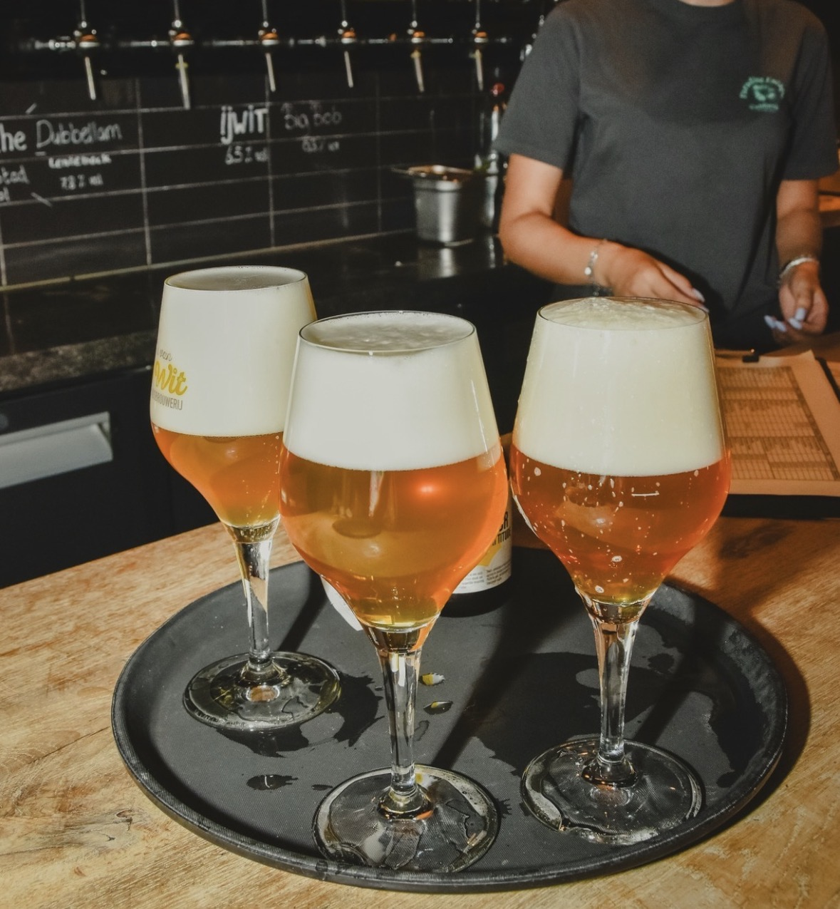
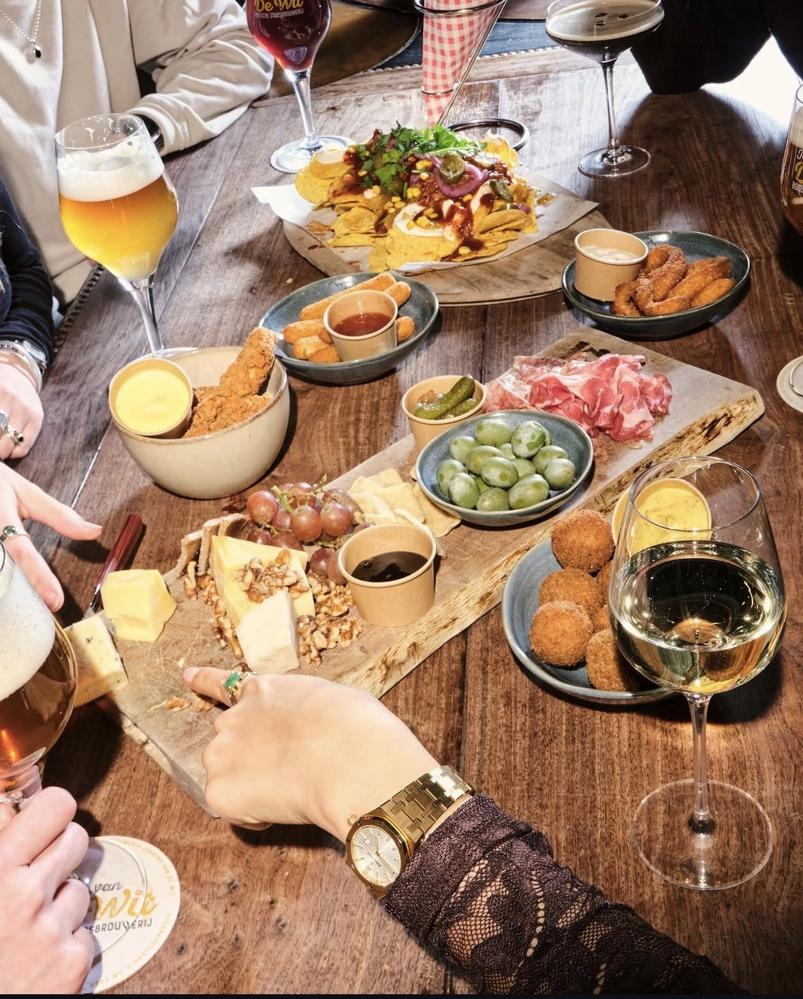
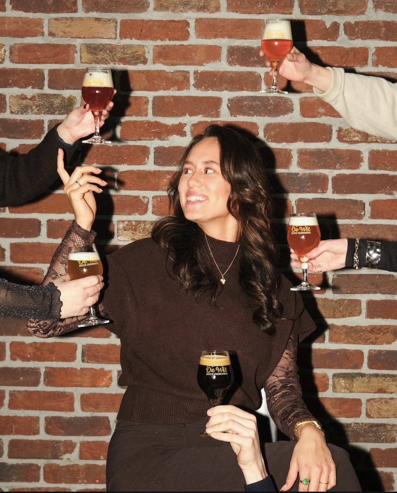
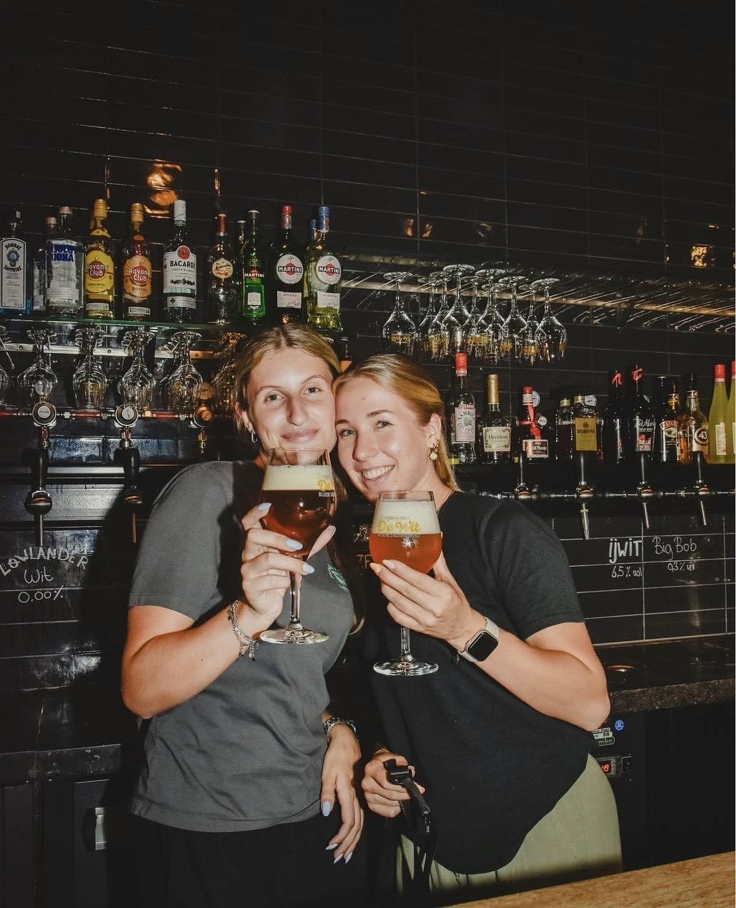
Van lokale hop tot Bossch bronwater — wij gebruiken enkel regionale en biologische ingrediënten. Niet omdat het hip is, maar omdat het onze bieren zoveel lekkerder maakt.

Blond
5,1 vol% · Licht goudkleurig
Fris en stevig blond met een witte schuimkraag. Meerdere hopsoorten, zachte smaak — perfecte dorstlesser op een zonnige dag.
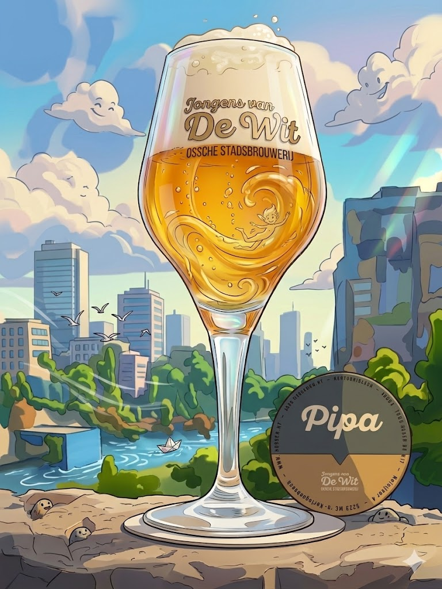
India Pale Ale
4,7 vol% · Ongefilterd
Frisse citrusnoten, grapefruit en citroengras. Geïnspireerd op de eigentijdse architectuur van het Paleiskwartier.
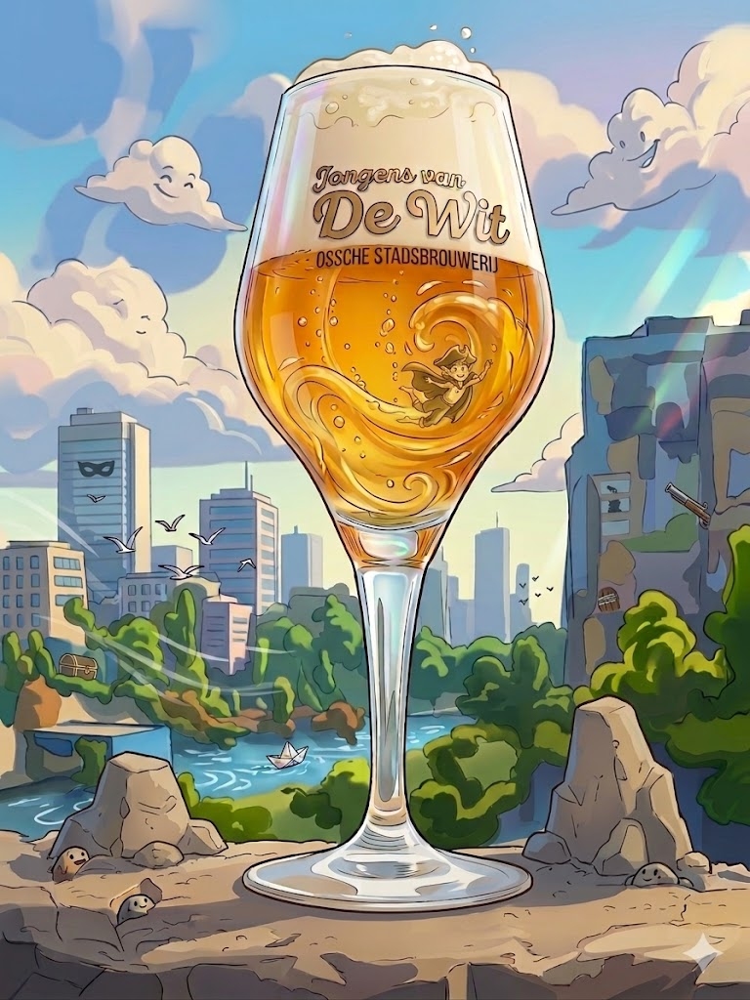
Witbier
6,5 vol% · Donkerblond tarwebier
Ongepasteuriseerd tarwebier, vernoemd naar de beruchte Bossche struikrover uit 1800. Vol karakter, rijk verhaal.
Tripel
7,2 vol% · Amberkleurig
Vernoemd naar ons adres Hofvijver 4. Qua smaak tussen La Chouffe en Tripel Karmeliet. Ongepasteuriseerd.
Gerstewijn
10,5 vol% · Zwaar bier
Intense gerstewijn met volmondig zoet en aangenaam bitter in de nasmaak. Exclusief verkrijgbaar van de tap.
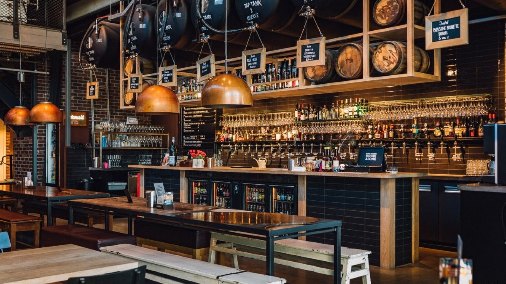
In onze Bossche Stadsbrouwerij brouwen wij onze bieren terwijl jij erbij zit. Daarvoor gebruiken we enkel lokale, regionale en biologische ingrediënten — van het hop tot de gerst, van het bronwater tot de tarwe.
Niet omdat het hip is, maar omdat het onze bieren zoveel lekkerder maakt. Ons bier schenken we uit de tap en verkopen we in PET-flessen — te genieten in ons stadscafé of thuis op de bank.
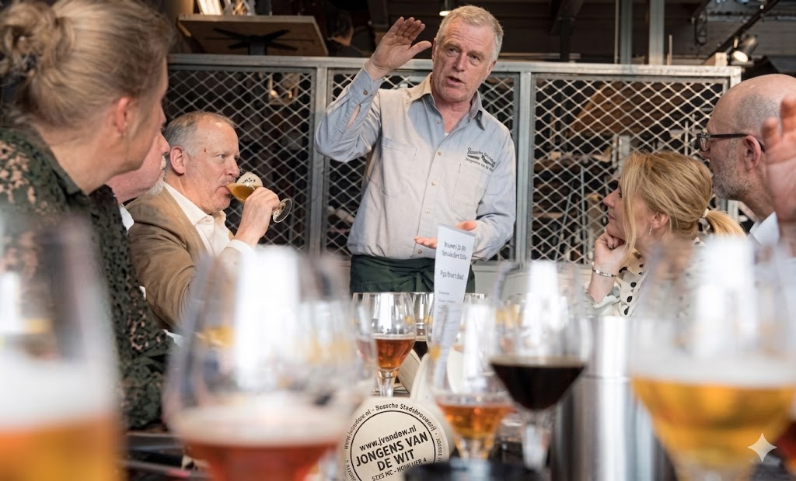
Proef onze Bossche ambachtsbieren getapt in het originele JvandeW glas. Onze brouwers vertellen over het brouwproces, de ingrediënten en de verhalen achter elk bier. Dagelijks mogelijk — reserveren gewenst.
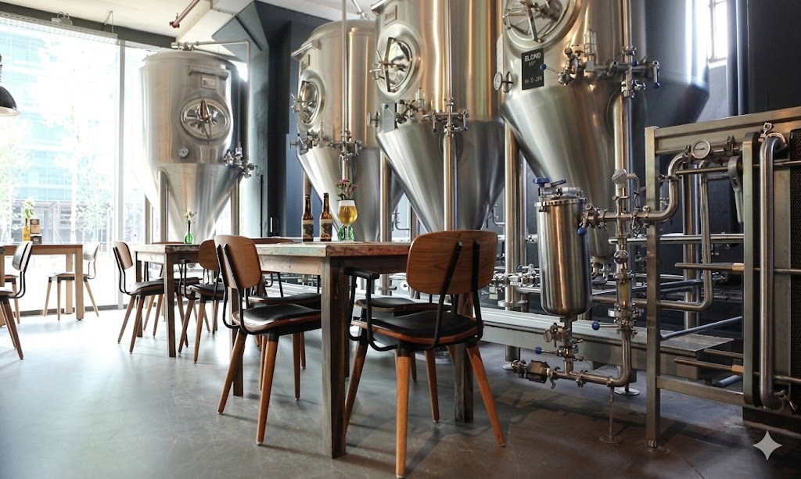
Ga mee achter de schermen van onze Bossche Stadsbrouwerij. Zie het brouwproces van dichtbij, ruik de hop en begrijp hoe onze ambachtsbieren tot leven komen. Te combineren met proeverij.
Adres
Hofvijver 4
5223 MC 's-Hertogenbosch
Openingstijden
Di – Za 11:00 – 23:00
Zo 11:00 – 21:00
Keuken 12:00 – 20:30
Reserveren